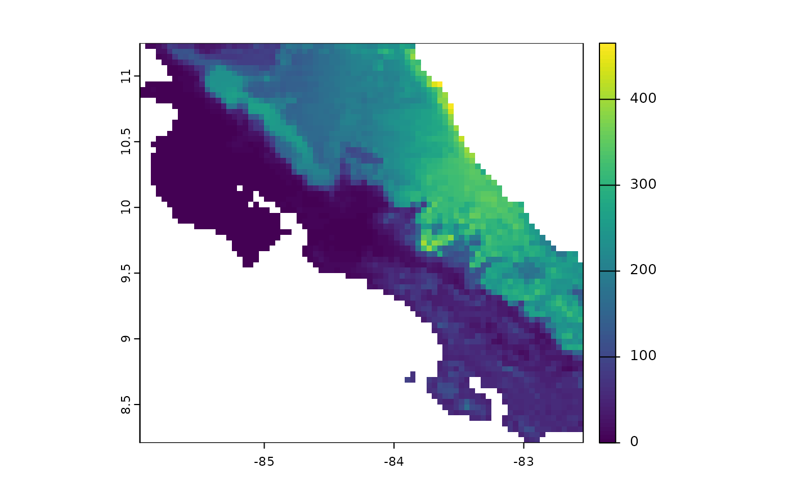
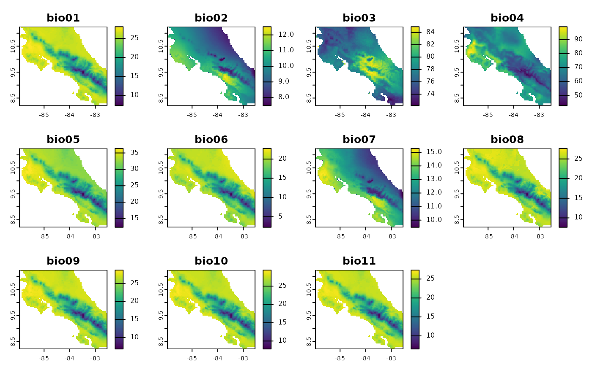
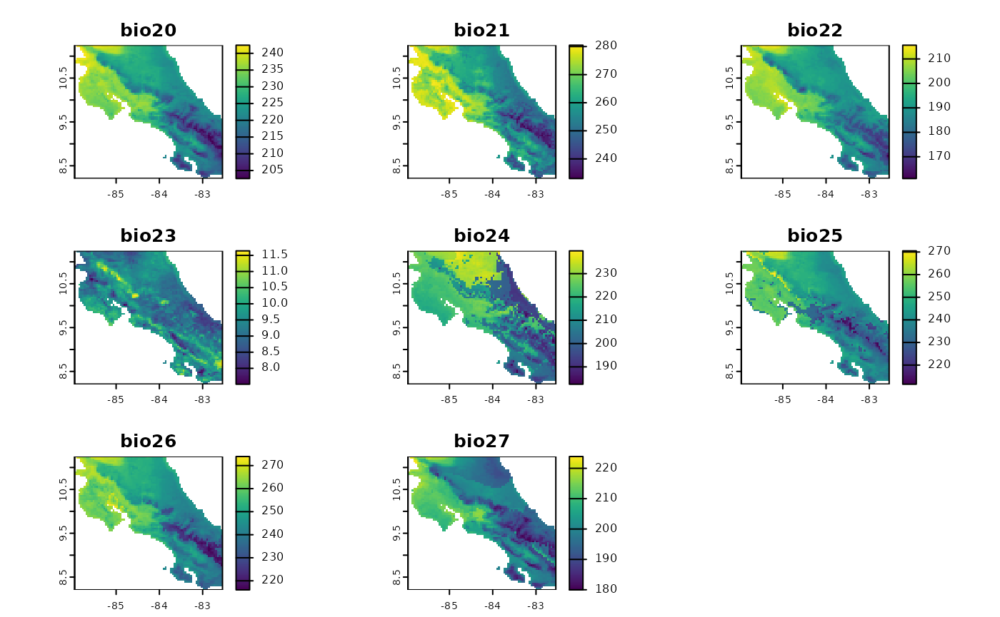

Tutorial v0.0.2 (ESP)
Gonzalo E. Pinilla-Buitrago
2023-11-15
tutorial_v0_MNE-(ESP).RmdPaquete bioclima: Variables bioclimáticas utilizando terra
El paquete bioclima es un paquete de R diseñado para
generar eficientemente variables bioclimáticas utilizando el paquete
terra en lugar de raster. Esta elección de dependencia hace que el
proceso sea más rápido, ya que terra está optimizado para operaciones
raster a gran escala. El paquete bioclima también tiene
disponible la opción de crear un subconjunto de variables sin necesidad
de construir todas ellas. Además, ofrece la opción de crear variables
bioclimáticas basadas en otros períodos de tiempo (por ejemplo, semanas,
días), definir períodos diferentes a los trimestres (utilizados para
bio08, 09, 10, 11, 16, 17, 18, 19). O incluso utilizar la temperatura
promedio real (parámetro ‘tavg’), en lugar de una aproximación basada en
la temperatura máxima y mínima ((tmax + tmin)) / 2).
La funcionalidad proporcionada por bioclima está
inspirada en la función biovars del paquete dismo. El
objetivo es agilizar el proceso de creación de variables bioclimáticas
para modelado ecológico y ambiental.
Aviso: Este paquete está en desarrollo
Este paquete de R está actualmente en desarrollo y puede contener errores, fallos o características incompletas.
Notas importantes
Utilice este paquete bajo su propio riesgo. El desarrollador no garantiza la estabilidad o corrección del código.
Se agradecen las contribuciones y los informes de errores. Si encuentra problemas o tiene sugerencias de mejora, por favor abra un problema (“Issues”) en el repositorio de GitHub.
Gracias por su comprensión y colaboración mientras trabajo para mejorar y estabilizar este paquete de R.
Instalación
Para instalar bioclima, puede utilizar el paquete
remotes. Si aún no lo tiene instalado, puede hacerlo
ejecutando:
install.packages("remotes")
remotes::install_github("gepinillab/bioclima")## terra (1.8-10 -> 1.8-15) [CRAN]## * checking for file ‘/tmp/RtmpsdvDRh/remotes2584857d482/gepinillab-bioclima-8f5aa5e/DESCRIPTION’ ... OK
## * preparing ‘bioclima’:
## * checking DESCRIPTION meta-information ... OK
## * checking for LF line-endings in source and make files and shell scripts
## * checking for empty or unneeded directories
## Omitted ‘LazyData’ from DESCRIPTION
## * building ‘bioclima_0.0.4.tar.gz’Instale y cargue los paquetes necesarios:
# Cargue librerias e instálelas si es necesario
if (!require("climateR")) {
remotes::install_github("mikejohnson51/climateR") }
if (!require("AOI")) {
remotes::install_github("mikejohnson51/AOI") }
if (!require("terra")) {
install.packages("terra") }
if (!require("raster")) {
install.packages("raster") }
if (!require("dismo")) {
install.packages("dismo") }
if (!require("here")) {
install.packages("here") }
if (!require("magrittr")) {
install.packages("magrittr") }
if (!require("bioclima")) {
remotes::install_github("gepinillab/bioclima") }Obtener datos mensuales de El Salvador
Descargue variables climáticas mensuales de la base de datos Terraclimate
utilizando el paquete climateR. Estos rasters tienen una
resolución espacial de 2.5 minutos de arco y una resolución temporal
mensual desde 1958 a 2022 (cada año la base de datos se actualiza para
incluir los meses del año pasado). El siguiente ejemplo creará variables
bioclimáticas para El Salvador resumiendo un período de 30 años.
# Descargar datos de El Salvador (30 años de datos mensuales; 360 meses)
env.data <- climateR::getTerraClim(
AOI = AOI::aoi_get(country = "El Salvador"), # Área de interés
varname = c("tmin", "tmax", "ppt"), # Variables a descargar
startDate = "1990-01-01", # Fecha límite inferior
endDate = "2019-12-01") # Fecha límite superior
# Guardar temperatura mínima mensual
tmin <- env.data$tmin
# Guardar temperatura máxima mensual
tmax <- env.data$tmax
# Guardar precipitación mensual
ppt <- env.data$ppt
# Checar estructura de spatRaster (incluye 360 meses cada uno)
tmax## class : SpatRaster
## dimensions : 32, 58, 360 (nrow, ncol, nlyr)
## resolution : 0.04166672, 0.04166677 (x, y)
## extent : -90.125, -87.70833, 13.125, 14.45834 (xmin, xmax, ymin, ymax)
## coord. ref. : +proj=longlat +ellps=WGS84 +no_defs
## source(s) : memory
## names : tmax_~total, tmax_~total, tmax_~total, tmax_~total, tmax_~total, tmax_~total, ...
## min values : 18.85, 20.03, 20.73, 22.78, 22.05, 20.95, ...
## max values : 34.32, 35.00, 34.84, 35.98, 34.68, 33.75, ...
## unit : degC, degC, degC, degC, degC, degC, ...
## time : 1990-01-01 to 2019-12-01 UTCPor favor, verifique los rasters antes de guardarlos. El 15 de noviembre de 2023, los datos climáticos obtenidos estaban invertidos. Afortunadamente, se puede corregir utilizando este código.
# Graficar el primer mes (1990-01) de precipitación
# Verificar si el mapa está invertido
plot(ppt[[1]])
# EJECUTAR ESTE CÓDIGO SI LOS VALORES DEL MAPA ESTÁN INVERTIDOS
# tmin <- rast(x = tmin, vals = values(t(tmin)))
# tmax <- rast(x = tmax, vals = values(t(tmax)))
# ppt <- rast(x = ppt, vals = values(t(ppt)))
# plot(ppt[[1]])Luego, podrá guardar los rasters mensuales en un único archivo TIFF. Cada mes se guardará en las bandas de un raster, por lo que no es necesario guardar cada mes individualmente.
# Crear una carpeta
dir.create(here("data"))
# Guardar cada spatRaster
terra::writeRaster(tmin,
here("data", "tmin_1990-01-a-2019-12.tif"),
overwrite = TRUE)
terra::writeRaster(tmax,
here("data", "tmax_1990-01-a-2019-12.tif"),
overwrite = TRUE)
terra::writeRaster(ppt,
here("data", "ppt_1990-01-a-2019-12.tif"),
overwrite = TRUE)Crear variables bioclimáticas
Una vez que tenga las variables mensuales, es hora de crear las variables bioclimáticas basadas en los promedios mensuales (n = 12 meses). Primero, necesitamos crear promedios mensuales para cada variable, y luego usar la función clima() para obtener las 19 variables bioclimáticas.
tmin_avg <- terra::tapp(tmin, index = rep(1:12, 30), fun = mean)
tmax_avg <- terra::tapp(tmax, index = rep(1:12, 30), fun = mean)
ppt_avg <- terra::tapp(ppt, index = rep(1:12, 30), fun = mean, na.rm = TRUE)
bios <- bioclima::clima(tmin = tmin_avg, tmax = tmax_avg, prcp = ppt_avg,
bios = c(1:19), period = 3, circular = TRUE)
plot(bios)Diferencias con dismo::biovars()
Obtener variables bioclimáticas usando la función del paquete
dismo.
# Convertir a stack rasters
r.ppt <- raster::stack(ppt_avg)
r.tmax <- raster::stack(tmax_avg)
r.tmin <- raster::stack(tmin_avg)
# Correr biovars
bios_dismo <- dismo::biovars(prec = r.ppt,
tmax = r.tmax,
tmin = r.tmin)
# Comparar salidas (la salida de dismo se convierte a spatRaster)
plot(rast(bios_dismo) - bios) #### Tiempo de ejecución
# Correr bioclima
start.bioclima <- Sys.time()
bios <- bioclima::clima(tmin = tmin_avg, tmax = tmax_avg, prcp = ppt_avg,
bios = c(1:19), period = 3, circular = TRUE)
end.bioclima <- Sys.time()
time.bioclima <- end.bioclima - start.bioclima
# Correr biovars
start.biovars <- Sys.time()
bios_dismo <- dismo::biovars(prec = r.ppt,
tmax = r.tmax,
tmin = r.tmin)
end.biovars <- Sys.time()
time.biovars <- end.biovars - start.biovars
time.biovars - time.bioclima## Time difference of 0.1451263 secsAl comparar los tiempos de ejecución, la diferencia para un área cómo
El Salvador es mínima. Pero al aumentar la resolución, el área (más
celdas), o al hacer series temporales, está diferencia puede ser
significativa. Por ejemplo, al correr el mismo ejemplo con Colombia (un
área que es 50 veces más grande que El Salvador) la diferencia fue de
casi un minuto, siendo bioclima 25 veces más rápido
(resultados no mostrados en este documento y que dependen de la
computadora utilizada).
Seleccionar un grupo de variables
Muchas veces no es necesario utilizar todas las variables bioclimáticas en nuestros análisis. Por este motivo, y a diferencia de biovars(), se puede definir en el parámetro ‘bios’ el número que identifica cada una de las variables bioclimáticas. De esta forma no es necesario obtener todas las 19 variables para luego solo seleccionar las variables de interés. En el siguiente ejemplo solo se obtendrán cuatro variables (bio05, bio06, bio13 y bio14). Este ejemplo es algo más rápido, ya que no es necesario calcular internamente los trimestres más cálidos/fríos o secos/húmedos.
bios4 <- bioclima::clima(
tmin = tmin_avg,
tmax = tmax_avg,
prcp = ppt_avg,
bios = c(5, 6, 13, 14),
period = 3,
circular = TRUE)
plot(bios4)
Contruir series temporales bioclimaticas
Ya que se cuenta con una función más rápida para obtener las variables bioclimáticas, ahora vamos a crear una serie temporal de estas. En este ejemplo, vamos a utilizar las variables mensuales descargadas previamente (360 meses). Sabiendo que solo se tienen 30 años de información, vamos a crear una serie de tiempo usando un promedio móvil mensual (moviendo un mes cada vez hacia el presente) con una ventana temporal de veinte años (cada promedio será de 240 meses). Este ejercicio creara una serie de 121 sets de variables que promedian veinte años cada una. El primer set corresponderá al promedio de enero 1990 a diciembre 2009, el segundo al promedio de febrero 1990 a enero 2010… y el último de enero 2000 a diciembre 2019.
Para guardar los intervalos de veinte años, se puede crear un índice basado en el mes de inicio. Luego se utilizará un loop para crear cada periodo de veinte años.
mes_inicial <- seq(as.Date("1990-01-01", format = "%Y-%m-%d"),
as.Date("2000-01-01", format = "%Y-%m-%d"),
by = "1 month")
head(mes_inicial)## [1] "1990-01-01" "1990-02-01" "1990-03-01" "1990-04-01" "1990-05-01"
## [6] "1990-06-01"
dir.create(here("./data/bios"))
for (i in 1:length(mes_inicial)) {
# Crear promedios de cada mes (e.g., promedios de veinte eneros,
# promedio de veinte febreros, etc.)
# TMAX
tmax_int <- terra::tapp(
x = tmax[[i:(i+240-1)]], #240 meses
index = 1:12, # índice mensual
fun = mean,
na.rm = TRUE) # remover NAs
# TMIN
tmin_int <- terra::tapp(
x = tmin[[i:(i+240-1)]], #240 meses
index = 1:12, # índice mensual
fun = mean,
na.rm = TRUE) # remover NAs
# PRCP
prcp_int <- terra::tapp(
x = ppt[[i:(i+240-1)]], #240 meses
index = 1:12, # índice mensual
fun = mean,
na.rm = TRUE) # remover NAs
# Crear sets of variables bioclimaticas
bios_ts <- bioclima::clima(
bios = 1:19,
tmax = tmax_int,
tmin = tmin_int,
prcp = prcp_int,
checkNA = FALSE # Verificar si los píxeles NA coinciden entre las variables de entrada. Si no estás seguro, deja en TRUE.
)
# Guardar archivos
terra::writeRaster(
bios_ts,
filename = here("data", "bios",
paste0(mes_inicial[i], "_mas-239-meses.tif")),
overwrite = TRUE,
gdal = c("COMPRESS=DEFLATE", "PREDICTOR=2")
)
# Imprimir porcentaje de avance en la consola
print(round(i*100/length(mes_inicial), digits = 2))
# Remover archivos temporales en la memoria RAM
tmpFiles(remove = TRUE)
}## [1] 0.83## [1] 1.65## [1] 2.48## [1] 3.31## [1] 4.13## [1] 4.96## [1] 5.79## [1] 6.61## [1] 7.44## [1] 8.26## [1] 9.09## [1] 9.92## [1] 10.74## [1] 11.57## [1] 12.4## [1] 13.22## [1] 14.05## [1] 14.88## [1] 15.7## [1] 16.53## [1] 17.36## [1] 18.18## [1] 19.01## [1] 19.83## [1] 20.66## [1] 21.49## [1] 22.31## [1] 23.14## [1] 23.97## [1] 24.79## [1] 25.62## [1] 26.45## [1] 27.27## [1] 28.1## [1] 28.93## [1] 29.75## [1] 30.58## [1] 31.4## [1] 32.23## [1] 33.06## [1] 33.88## [1] 34.71## [1] 35.54## [1] 36.36## [1] 37.19## [1] 38.02## [1] 38.84## [1] 39.67## [1] 40.5## [1] 41.32## [1] 42.15## [1] 42.98## [1] 43.8## [1] 44.63## [1] 45.45## [1] 46.28## [1] 47.11## [1] 47.93## [1] 48.76## [1] 49.59## [1] 50.41## [1] 51.24## [1] 52.07## [1] 52.89## [1] 53.72## [1] 54.55## [1] 55.37## [1] 56.2## [1] 57.02## [1] 57.85## [1] 58.68## [1] 59.5## [1] 60.33## [1] 61.16## [1] 61.98## [1] 62.81## [1] 63.64## [1] 64.46## [1] 65.29## [1] 66.12## [1] 66.94## [1] 67.77## [1] 68.6## [1] 69.42## [1] 70.25## [1] 71.07## [1] 71.9## [1] 72.73## [1] 73.55## [1] 74.38## [1] 75.21## [1] 76.03## [1] 76.86## [1] 77.69## [1] 78.51## [1] 79.34## [1] 80.17## [1] 80.99## [1] 81.82## [1] 82.64## [1] 83.47## [1] 84.3## [1] 85.12## [1] 85.95## [1] 86.78## [1] 87.6## [1] 88.43## [1] 89.26## [1] 90.08## [1] 90.91## [1] 91.74## [1] 92.56## [1] 93.39## [1] 94.21## [1] 95.04## [1] 95.87## [1] 96.69## [1] 97.52## [1] 98.35## [1] 99.17## [1] 100